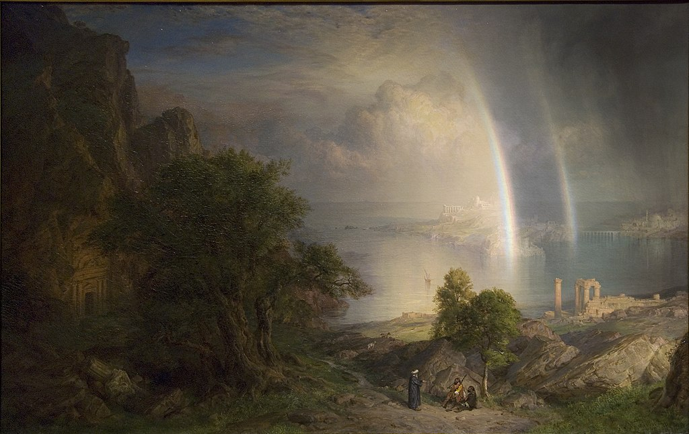

<head>
<meta charset="UTF-8" />
<meta name="keywords" content="drawing, painting" />
<meta name="description" content="drawings by Sunjy" />
<title>Sunjy</title>
<link rel="shortcut icon" type="image/x-icon" href="../../mImages/mCommon/favicon.ico" media="screen" />
<link rel="stylesheet" type="text/css" href="../../mCsses/mCommon/mCssA.css" />
<link rel="stylesheet" type="text/css" href="../../mCsses/mCommon/mCssB.css" />
<link rel="stylesheet" type="text/css" href="../../mCsses/mCommon/mCssC.css" />
<link rel="stylesheet" type="text/css" href="../../mCsses/mCommon/mCssD.css" />
<link rel="stylesheet" type="text/css" href="../../mCsses/mContent/mCssA.css" />
<link rel="stylesheet" type="text/css" href="../../mCsses/mContent/mCssB.css" />
<link rel="stylesheet" type="text/css" href="../../mCsses/mContent/mCssC.css" />
<link rel="stylesheet" type="text/css" href="../../mCsses/mContent/mCssD.css" />
</head>
<script type="text/javascript" src="../../mScripts/mContent/mContentAA.js" /></script>
<script type="text/javascript" src="../../mScripts/mContent/mContentAB.js" /></script>
<script type="text/javascript" src="../../mScripts/mContent/mContentAC.js" /></script>
<script type="text/javascript" src="../../mScripts/mContent/mContentAD.js" /></script>
<script type="text/javascript"></script> 
<script type="text/javascript">
document.write('<div class="mImgAbsolute"></div>');
/*
document.write('<p class="mFontSizeBColor" />From a white paper...</p>');
document.write('<table class="center"><tr><td>');
document.write('');
document.write('</td></tr></table>');
*/
</script>


<script type="text/javascript">
document.write('<p class="mFontSizeBColor" />The Aegean Sea</p>');
document.write('<p class="mFontSizeSColor" />“The Aegean Sea” by Frederic Edwin Church is a capriccio which means an architectural fantasy. In this painting, the artist, Church placing together buildings, archaeological ruins, and other structural elements in fictional combinations. This artwork was inspired by Church’s travels to Europe and the Middle East from 1867 to 1869. The composite image includes elements from sketches that Church made in different locations.<br><br>Included in the “The Aegean Sea” are:<br>•the rock-cut entrance from Petra in a cliff to the left<br>•fallen capitals from the Temple of Bacchus at Baalbek in the lower left<br>•Roman columns from Syria to the right<br>•and in the distance lie classical ruins that resemble the Acropolis of Athens or the Temple of Apollo in Ancient Corinth, and<br>•the dome and minaret of a mosque from Istanbul.<br><br>In this work, Church moved away from his usual naturalistic style to a more idealized style. The atmospheric effects that may be inspired by the paintings of J. M. W. Turner, which Church had seen in London. The work may also take inspiration from Turner’s 1826 view of the Roman Forum. Church designed a gilded frame for the painting, decorated with an eclectic mixture of Middle Eastern motifs, including stars and rosettes, and egg-and-dart and other moldings.<br><br>Capriccio Art<br><br>In painting, a capriccio means an architectural fantasy, placing together buildings, archaeological ruins and other architectural elements in fictional combinations, and may include figures. The term is also used for landscape paintings with an aspect of fantasy. The pictures can be anything to re-imagining a building in the future as ruins or placing a structure in a completely different setting than which it exists in reality.<br></p>');
document.write('<table class="center" /><tr><td>');
document.write('<br>Included in the “The Aegean Sea” are:<br>•the rock-cut entrance from Petra in a cliff to the left<br>•fallen capitals from the Temple of Bacchus at Baalbek in the lower left<br>•Roman columns from Syria to the right<br>•and in the distance lie classical ruins that resemble the Acropolis of Athens or the Temple of Apollo in Ancient Corinth, and<br>•the dome and minaret of a mosque from Istanbul.<br><br>In this work, Church moved away from his usual naturalistic style to a more idealized style. The atmospheric effects that may be inspired by the paintings of J. M. W. Turner, which Church had seen in London. The work may also take inspiration from Turner’s 1826 view of the Roman Forum. Church designed a gilded frame for the painting, decorated with an eclectic mixture of Middle Eastern motifs, including stars and rosettes, and egg-and-dart and other moldings.<br><br>Capriccio Art<br><br>In painting, a capriccio means an architectural fantasy, placing together buildings, archaeological ruins and other architectural elements in fictional combinations, and may include figures. The term is also used for landscape paintings with an aspect of fantasy. The pictures can be anything to re-imagining a building in the future as ruins or placing a structure in a completely different setting than which it exists in reality.<br>" />');
document.write('</td></tr></table>');
</script>


